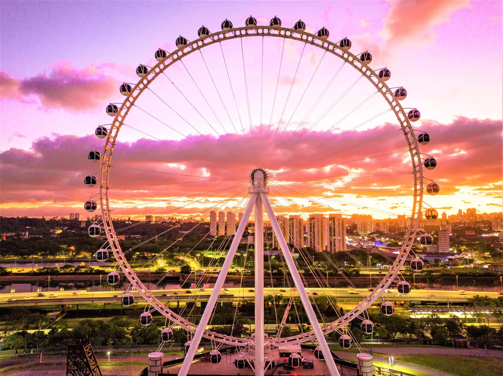

Experiência VIP em maior roda gigante
de SP terá cerveja e taça de espumante
Ingressos para a Roda Rico no Parque Celso Portinari custam de 25 a 420 reais; abaixo, tudo que você
precisa saber

A Roda Rico começará a funcionar dia 9 de dezembro e é parte de um projeto de renovação da região.